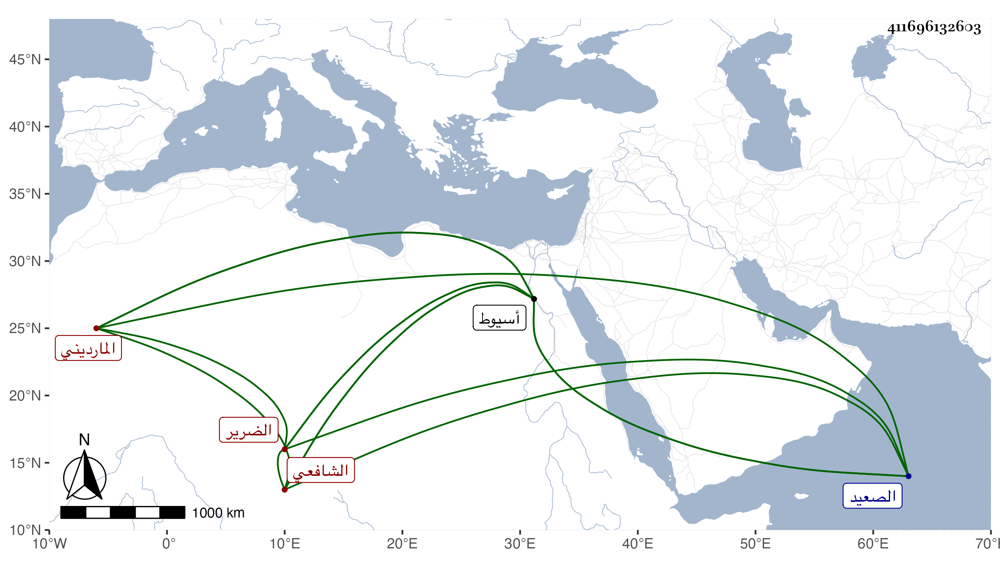

0902Sakhawi.DawLamic.ITO20230111-ara1.EIS1600.411696132603
Biography ID: 411696132603
186
عبد الرحمن بن أحمد بن يوسف بن عبد الأعلى المارديني الضرير الشافعي نزيل أسيوط . حفظ القرآن ومختصر التبريزي والكافية في النحو وقطن أسيوط وأكثر من مدائح أعيان الصعيد بحيث كان له عليهم رواتب سنوية وغيرها . مات في طاعون سنة إحدى وثمانين وقد زاحم الثمانين . ومن نظمه ردا على من أنكر عليه في مدحه لبعضهم وصفه بالعظيم : ويا جحشا تولد من حمار
| لقد كتب النبي إلى هرقل | عظيم الروم أورده البخاري |
